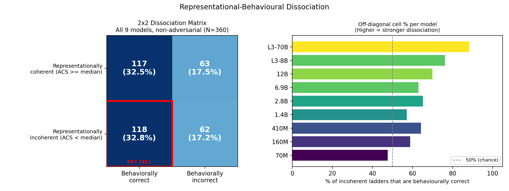
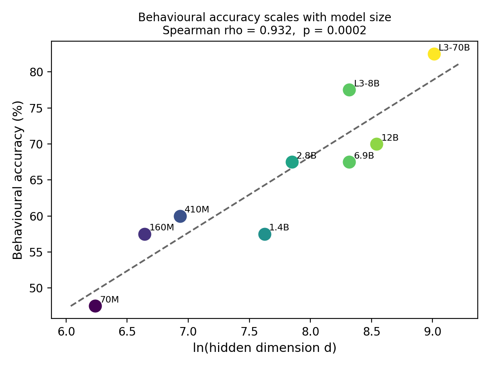
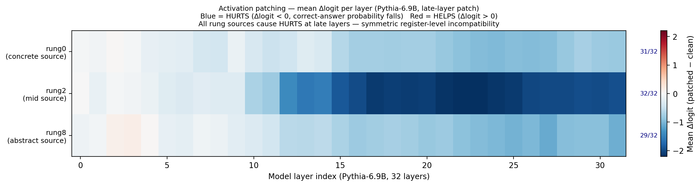
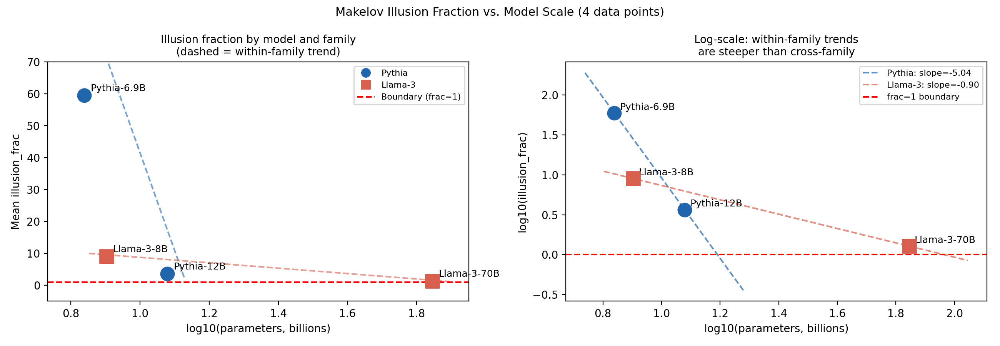

It's been a while since my last post, and this one is also heavier on technical details. Last time I was trying to understand when and why a model would grok a certain prompt; this time the question was inverted: instead of asking "given that a model has grokked something, what can we say about its internal representations?", I decided to ask "given that a model has not grokked something, what can we say about its ability to answer questions correctly about it anyway?"
The latter question consumed my existence for the last two months, nine models, fifty concept hierarchies, and eventually a paper. This is the casual summary of that work.
The setup that got me here
Ask a frontier language model whether "4 is even" is an instance of a quotient structure construction, and it will reason correctly about the relationship between the two. It is not trivial to ask a question that involves both a concrete example and a significantly more abstract concept, but it is possible, and the model will answer correctly more often than not.
Now, open it up and look at the representations of the two statements in whatever geometric space the model chose to encode them in, and you will find that the two have nothing coherent to say to each other. The two statements that the model correctly associated in behavior are represented in completely different geometrical neighborhoods in the model's internal space.
The two facts are correct in their association, but the model has no coherent internal representation of that association. This tension is the root of this work's interest to me.
Think of a person who knows a lot of individual facts but never studied anything systematically. Ask them "is a shark a fish?" and they will correctly answer "no," because they were once told that sharks are cartilaginous fish, but ask them to explain the difference between fish and sharks, and you will find that the knowledge you just extracted from them has no general theory behind it, only individual facts. This is the kind of dissociation between facts and representations that I was looking for, but on a much larger scale. Instead of one or two facts, I wanted to see how much a model can know individually while knowing nothing systematically, and what that "nothing systematically" looks like internally.
The question I actually wanted answered
Now that I've seen this dissociation between behavioral accuracy and representational coherence, I want to see how it scales with model size.
There are two interesting options here.
The first is that the dissociation is an artifact of small models, which are not yet capable of grokking anything, and that as the models get bigger, this artifact disappears.
The second option is that bigger models are better at answering questions correctly precisely because of this dissociation, and therefore the gap between behavioral accuracy and representational coherence actually widens with scale.
There was no direct evidence for either option, because the two sides of the dissociation were studied in different regimes: people who care about internal representations typically do not benchmark their models on abstract reasoning, and people who care about abstract reasoning typically do not study the internal representations of their models. Both sides had results that could be interpreted as evidence against the other, and therefore both were hesitant to directly engage with the other's findings.
What I wanted to do was directly measure the dissociation between the two sides in the same models, on the same questions, at the same time, to see whether it was an artifact of model size or not.
Building a ladder to measure abstraction
To actually measure this dissociation, I needed a set of concept hierarchies that had enough rungs for abstraction to be measurable.
I built fifty of them, with nine rungs each, spanning math, graph theory, and social/everyday reasoning, going from very concrete statements to very abstract ones. One of the mathematical ladders looked like this:
L0: "4 is even."
L4: "Parity exemplifies the general construction of quotient structures from equivalence relations on algebraic objects."
L8: "In Homotopy Type Theory, the parity quotient ℤ/2ℤ is a higher inductive type, with the universal property of the coequaliser internalised as the elimination rule of the HIT within the univalent universe."
The same goes for other domains: graph theory, evolution, and social reasoning all had their own ladders with nine rungs each. Each ladder was validated in three ways: agreement with LLM annotations, blind reordering by another LLM, and Flesch–Kincaid readability scores, before any of them were actually used in the final experiment.
For each model, I calculated an Abstraction Coherence Score (ACS) for each ladder, which basically measured how tight the clustering of the ladder's rungs was in the model's internal geometry, adjusted for vocabulary differences between rungs. A high score meant that the model knew what the ladder was about in a broad sense: the nine rungs of the ladder were represented as points close to each other in the model's internal geometry. A low score meant the opposite: that the model had no broad conceptual grasp of the ladder, and therefore represented its rungs as points spread out across the internal geometry.
A common criticism of a score like this is that it confounds abstraction with vocabulary diversity: if the model knows what the ladder is about, it might just use similar words to describe all of its rungs, and those rungs would end up with similar representations for that reason alone. To test this, I built flat ladders, with nine rungs that all said more or less the same thing, at roughly the same level of abstraction. If vocabulary diversity were the driving force behind ACS, the flat ladders should score just as low as the real ones. They didn't: the ACS of the flat ladders was, on average, three to five times higher than that of the real hierarchical ladders.
So a low ACS doesn't reflect the model's inability to grasp the meaning of individual words. It reflects the model's inability to grasp the ladder as a whole, to represent all of its rungs as points close to each other in the internal geometry.
For the same set of ladders, I then asked the models a behavioral question about each, a yes/no question that linked a concrete rung (L0) to a mid-level abstract one (L4): "is the fact that 4 is even an instance of a quotient structure construction?", and recorded whether the model had answered correctly.
One concern about a behavioral benchmark like this is that the model could be exploiting some regularity in how the question is phrased, rather than actually reasoning about the connection between the two facts. To check, I took 20% of the questions and flipped their correct answer label without changing anything else about them, same wording, opposite "correct" answer. If the model were exploiting some regularity in the phrasing, it should still do reasonably well on these flipped questions. It didn't: accuracy on the flipped questions dropped to close to chance, which is a good sign.
Nine models, ranging from Pythia-70M to Llama-3-70B, all went through the same set of measurements.

The gap does not shrink with scale. It grows.
If the two sides of the dissociation were measuring the same thing, you would expect some correlation between them. Instead, across all nine models, a model's accuracy on the questions had essentially nothing to do with how coherent its representations of the ladders were. The two came out statistically independent.
The more interesting finding is in how that plays out with scale: as the models got bigger, the fraction of correct answers that came from incoherent representations increased dramatically, from barely above chance in Pythia-70M to 75–88% in Llama-3-70B.
The bigger and more accurate the model is, the more often it can answer questions correctly while having no coherent understanding of the concepts it's reasoning about. The two sides of the dissociation don't just fail to correlate, they scale independently: growth in behavioral accuracy isn't matched by any similar growth in representational coherence.

The dissociation between behavioral accuracy and representational coherence is real, and it grows with scale. This is interesting from a practical point of view, because it suggests accuracy isn't a good proxy for internal representational coherence. It's also interesting from a theoretical point of view, because it suggests the mechanism behind the accuracy growth might be a genuinely different mechanism from the one behind the coherence growth.
Does this dissociation actually mean anything?
It's entirely possible that this finding is an artifact of using ACS as a proxy for representational coherence. To actually see whether there was a dissociation between the model's ability to answer questions correctly and its ability to hold coherent representations of concepts, I needed a causal test on the model itself, not just a correlational one.
For all ladders that fell into the "incoherent but correct" category, I took a hidden state from one of the rungs and patched it into the same position in the model's processing of the behavioral question, at the same layer, and looked at the change in the logit of the correct answer. If the different abstraction levels were represented in similar regions of the model's internal geometry, this patch should have little effect on the model's behavior. If they were represented in different, specialized regions, the patch should disrupt it.
It disrupted it. Across the patching experiments, injecting a representation from any abstraction level into the processing of a behavioral question at the same layer decreased the logit of the correct answer. This held in both directions, suggesting there was no particular direction in which patching was easier or harder. It didn't matter whether the patch came from a higher or lower abstraction level, or even whether it came from a rung of the same ladder or a different one: patching disrupted the model's behavior in a similar way across the board, strongest of all when the source was a mid-level rung.

What's happening inside, and where is it going
The picture that emerges from these results is that the model has sorted different levels of abstraction into different "registers" in its internal geometry. These registers are real in the sense that patching between them disrupts the model's behavior, but they aren't comprehensive: the model can still answer questions correctly about concepts it represents in different registers. The model's ability to answer questions about concepts at different levels of abstraction is dissociated from its ability to represent those concepts in a coherent way.
The obvious follow-up question is whether this register structure is a permanent property of the model's architecture, or something that emerges at scale. I ran a rowspace decomposition analysis, a technique from recent interpretability work, that isolates how much of a patch's disruptive effect actually comes from crossing between registers, versus how much would have been disruptive anyway, even within the correct register. Following that earlier work, I'll call the cross-register share of the effect the illusion fraction. It was much smaller in the largest models than in the smallest ones, in both the Pythia and Llama families, suggesting the register structure is itself an emergent property of scaling.

A strange thing to sit with here: the register structure itself dissolves at scale, while the mechanism that lets the model answer questions correctly despite dissociating different levels of abstraction gets stronger at scale. Two trends, both real, both interesting, and not obviously related to each other.
A rough summary of this work
If I had to summarize this work in a single sentence, it would be: correctness and coherence are not the same currency, and models are getting better at spending only one of them.
A model that's never been pushed to form a coherent understanding of a concept hierarchy can still answer questions about it correctly, the same way a person can know individual facts about a subject without being able to form a theory about it. What surprised me wasn't the mere possibility of that kind of dissociation, but the fact that it becomes more likely as the model gets bigger and ostensibly more capable. Whatever lets a model answer questions about concepts at different levels of abstraction doesn't seem to be the same thing that lets it form coherent representations of those concepts, and the two appear dissociated at every scale I tested.
What this means
If you only care about a model's ability to answer questions correctly, as most benchmarks do, you cannot conclude from its accuracy alone that it has formed any internally coherent representation of the concepts it's reasoning about. This isn't a hypothetical concern: larger models' ability to answer correctly is growing faster than their ability to form coherent representations of what those questions are actually about. Larger models are therefore more likely to appear knowledgeable about subjects they have no coherent understanding of, which matters anywhere that kind of apparent knowledge gets mistaken for competence.
None of this is a claim about whether LLMs are conscious, or "as smart as humans," or any other broad question like that. It's a much narrower finding about the mechanisms of abstraction and representation: two things that look like they should be the same measurement, can it answer correctly, does it represent the concept coherently, turn out to be dissociated, and that dissociation is itself a function of scale. That's the part I want to keep pulling on. If correctness and coherence really are two separate currencies, the next question is what can be built with both of them that can't be built with only one.
— Nishal Thomas